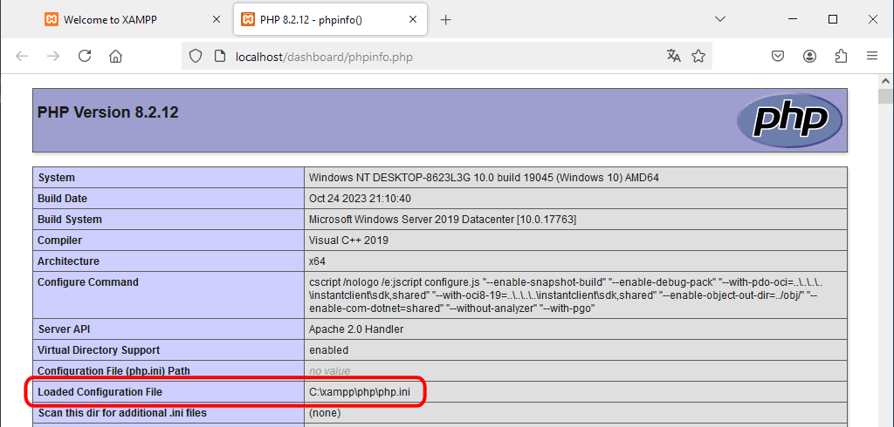

Configuración de Apache
El fichero de configuración de Apache es el archivo httpd.conf, un archivo de texto sin formato.
En httpd.conf las líneas comentadas empiezan por el carácter almohadilla (#). En Windows, al escribir una ruta de directorio en httpd.conf se puede utilizar tanto la barra como la contrabarra (es decir, se puede escribir tanto C:\xampp como C:/xampp).
En XAMPP 7.0 el archivo httpd.conf se encuentra en el directorio:
- en Windows: C:\xampp\apache\conf\
- en GNU/Linux: /opt/lampp/etc/
Se puede abrir directamente el archivo httpd.conf haciendo clic en el botón "Config" correspondiente a Apache y eligiendo la primera opción:

En esta lección se comentan algunas directivas de configuración de Apache. Antes de modificar cualquier archivo de configuración, se recomienda hacer una copia de seguridad del archivo de configuración original.
Ubicación de las páginas web
Con la configuración inicial de XAMPP 7.0.X, al abrir en el navegador una dirección que empieza por http://localhost/, Apache busca el elemento solicitado a partir del directorio raíz del servidor, indicado por la directiva DocumentRoot del archivo httpd.conf:
- si se trata de un archivo:
- si encuentra el archivo, lo sirve al navegador.
- si no encuentra el archivo, envía un error 404 (objeto no localizado)
- si se trata de un directorio:
- si encuentra el directorio, busca si existe alguno de los archivos indicados por la directiva DirectoryIndex (por ejemplo, en XAMPP 7.0, index.php index.pl index.cgi index.asp index.shtml index.html index.htm etc) :
- si encuentra alguno de esos archivos, lo sirve al navegador.
- si no encuentra ninguno de esos archivos, Apache envía al navegador el listado del directorio.
- si no encuentra el directorio, envía un error 404 (objeto no localizado)
Esta configuración es adecuada para entornos de programación, pero en entornos de producción se suele modificar, por ejemplo, para no enviar el listado del directorio.
En el directorio raíz del servidor, XAMPP 7.0 instala una serie de páginas que permiten administrar el servidor, por eso al abrir en el navegador la dirección http://localhost se abre una página de administración propia de XAMPP.
A la hora de añadir otras páginas en el servidor, se puede hacer de varias formas:
- Cambiar el directorio raíz del servidor, modificando la directiva DocumentRoot (como se explica en la lección Configuración 2). Tiene el inconveniente de que las páginas de administración de XAMPP se perderían (aunque podríamos recuperarlas creando una directiva Alias).
- Crear directorios de usuario, mediante la directiva UserDir (como se explica en la lección Configuración 2). Es la mejor solución en un ordenador con varios usuarios de Windows para que cada usuario tenga sus propias páginas separadas e independientes del resto. Cada usuario puede guardar sus páginas en un directorio (con el mismo nombre para todos los usuarios, pero cada uno en su propia carpeta de Mis Documentos) y cada usuario sólo ve sus páginas.
- Crear uno o varios alias, mediante la directiva Alias. Es una solución que permite mantener las páginas en los directorios que más nos interesen, aunque si hay varios usuarios, estos tienen que tener en cuenta los alias creados por los demás, puesto que los nombres no se pueden repetir.
En mis clases, dado que sólo hay un usuario de Windows, aunque puede haber varios alumnos que utilicen el mismo usuario, optaremos por la solución de crear alias, uno para cada alumno que utilice el ordenador.
Alias
La directiva Alias permite que el servidor abra páginas que no estén dentro del directorio establecido mediante la directiva DocumentRoot.
Para que Apache pueda acceder a esos directorios, en el archivo httpd.conf debe estar cargado el módulo alias mediante la directiva:
LoadModule alias_module modules/mod_alias.so
En XAMPP 7.0 esta directiva no está comentada de forma predeterminada, por lo que no es necesario modificarla, aunque conviene comprobar su valor.
Además, hay que añadir en el archivo httpd.conf una directiva Alias dentro de la directiva <IfModule alias_module> (que ya existe en XAMPP 7.0).
Como ejemplo, vamos a crear un par de alias. Supongamos que un usuario está siguiendo un curso de PHP y al mismo tiempo en su trabajo también escribe programas en PHP. Este usuario quiere guardar los archivos en diferentes carpetas de Mis Documentos, pero al mismo tiempo acceder fácilmente a los archivos sin tener que escribir direcciones muy largas:
| Programas |
Carpeta en el disco |
Ruta en el navegador |
| Programas escritos en el curso de PHP |
Mis documentos/Cursos/PHP |
localhost/clase |
| Programas escritos para el trabajo |
Mis documentos/Trabajo/PHP |
localhost/curro |
Para ello, hay que añadir en el archivo httpd.conf dos directivas Alias dentro de la directiva <IfModule alias_module>. Si ya existe la directiva IfModule (como ocurre en XAMPP 7.0), sólo habría que añadir las líneas en negrita del ejemplo siguiente:
- en Windows:
<IfModule alias_module>
# ...
# 2016-09-12. He añadido este Alias para los programas escritos en el curso de PHP.
Alias /clase "C:\Users\NombreDeUsuario\Documents\Cursos\PHP"
<Directory "C:\Users\NombreDeUsuario\Documents\Cursos\PHP">
Options Indexes FollowSymLinks Includes ExecCGI
AllowOverride All
Require all granted
</Directory>
# 2016-09-12. He añadido este Alias para los programas escritos para el trabajo.
Alias /curro "C:\Users\NombreDeUsuario\Documents\Trabajo\PHP"
<Directory "C:\Users\NombreDeUsuario\Documents\Trabajo\PHP">
Options Indexes FollowSymLinks Includes ExecCGI
AllowOverride All
Require all granted
</Directory>
# ...
</IfModule>
- en GNU/Linux:
<IfModule alias_module>
# ...
# 2016-09-12. He añadido este Alias para los programas escritos en el curso de PHP.
Alias /clase "/home/NombreDeUsuario/Documents/Cursos/PHP"
<Directory "/home/NombreDeUsuario/Documents/Cursos/PHP">
Options Indexes FollowSymLinks Includes ExecCGI
AllowOverride All
Require all granted
</Directory>
# 2016-09-12. He añadido este Alias para los programas escritos para el trabajo.
Alias /curro "/home/NombreDeUsuario/Documents/Trabajo/PHP"
<Directory "home/NombreDeUsuario/Documents/Trabajo/PHP">
Options Indexes FollowSymLinks Includes ExecCGI
AllowOverride All
Require all granted
</Directory>
# ...
</IfModule>
Como se ha comentado en el apartado de la directiva DocumentRoot, se debe incluir una directiva <Directory> para el directorio indicado en la directiva Alias.
Hay que tener cuidado con las erratas, ya que cualquier error impedirá que Apache se ponga en marcha.
Configuración de PHP
El archivo php.ini
El archivo de configuración de PHP es el archivo php.ini, un archivo de texto sin formato.
En php.ini las líneas comentadas empiezan por el carácter punto y coma (;).
En XAMPP 7.0 el archivo php.ini se encuentra:
- en Windows, en el directorio C:\xampp\php\php.ini.
- en GNU/Linux, en el directorio /opt/lampp/etc.
Se puede abrir directamente el archivo php.ini haciendo clic en el botón "Config" correspondiente a Apache y eligiendo opción correspondiente:

Nota: La ruta del archivo php.ini que está utilizando Apache se puede ver en el campo "Loaded Configuration File" de la primera tabla que muestra la función phpinfo(). En el menú de la página de administración de XAMPP 7.0 hay una opción phpinfo() que muestra la configuración de PHP.


Directivas de configuración en php.ini
Se comentan a continuación algunas directivas de configuración de PHP, aunque también se puede consultar el manual de PHP. Antes de modificar cualquier archivo de configuración, se recomienda hacer una copia de seguridad del archivo de configuración original.
En el archivo de configuración php.ini, las líneas que comienzan por ; (punto y coma) son líneas comentadas, es decir, que no se tendrán en cuenta cuando PHP cargue el archivo. En el archivo de configuración se pueden encontrar bloques de varias líneas comentadas que explican el significado de una directiva y más adelante una línea sin comentar que establece el valor de la directiva. Un error de principiante bastante común es modificar el valor de la directiva en una línea comentada, lo que no sirve para nada.
short_open_tag
Los fragmentos de código PHP se identifican mediante las etiquetas <?php .... ?>. La directiva short_open_tag especifica si también se admiten las etiquetas <? ... ?>.
| short_open_tag = On |
Se admite el uso de <? ... ?> en vez de <?php ... ?> |
| short_open_tag = Off |
No se admite el uso de <? ... ?> en vez de <?php ... ?> (Valor recomendado) |
Se recomienda que esta directiva tome el valor Off y que se utilice siempre la etiqueta <?php para empezar los fragmentos de código php.
short_open_tag = Off ; Valor recomendado en este curso si no se va a utilizar el panel de control de XAMPP
En XAMPP 7.0 esta directiva viene predeterminada con valor Off, por lo que no es necesario modificarla, aunque conviene comprobar su valor.
Si en el servidor la directiva toma el valor On, las páginas XHTML que contengan una declaración XML (por ejemplo, <?xml version="1.0" encoding="iso-8859-1"?>) producirían un error. Este problema se resolvería utilizando un fragmento de código para generar la declaración XML.
| <?xml version="1.0" encoding="utf-8"?> |
Parse error: parse error, unexpected T_STRING in ejemplo.php on line 1 |
| <?php
print "<?xml version=\"1.0\" encoding=\"utf-8\"?" . ">\n";
?>
|
|
error_reporting
La directiva error_reporting especifica el tipo de errores notificados por PHP. Por ejemplo:
| error_reporting = E_ALL & ~E_NOTICE & ~E_DEPRECATED |
Se muestran todos los errores, menos los avisos y obsoletos. |
| error_reporting = E_ALL & ~E_DEPRECATED |
Se muestran todos los errores, menos los obsoletos |
| error_reporting = E_ALL ; Valor recomendado en este curso |
Se muestran todos los errores (Valor recomendado) |
En un entorno de producción se suelen ocultar a los clientes los mensajes de error por motivos de seguridad (aunque se deben registrar en el archivo de logs), pero en un entorno de desarrollo es conveniente mostrar el mayor número de errores y avisos para corregirlos. Para mostrar todos los errores, la directiva error_reporting debe tomar el valor E_ALL
error_reporting = E_ALL ; Valor recomendado en este curso
El inconveniente de utilizar una configuración tan exigente es que algunos paquetes de terceros (bibliotecas, CMS, etc.) pueden dejar de funcionar y a veces no queda más remedio que volver a un valor menos estricto para poderlos utilizar.
 En XAMPP 7.0 esta directiva viene predeterminada con el valor E_ALL & ~E_DEPRECATED & ~E_STRICT, por lo que se recomienda modificarla:
En XAMPP 7.0 esta directiva viene predeterminada con el valor E_ALL & ~E_DEPRECATED & ~E_STRICT, por lo que se recomienda modificarla:
; 2016-09-12. Barto. He cambiado error_reporting para mostrar todos los errores
; error_reporting=E_ALL & ~E_DEPRECATED & ~E_STRICT
error_reporting = E_ALL
Los posibles valores de esta directiva, que se pueden combinar con &, son los siguientes:
| Tipo de error |
Descripción |
| E_ALL |
Todos los errores y avisos. |
| E_ERROR |
Errores fatales detectados en tiempo de ejecución. |
| E_WARNING |
Advertencias (errores no fatales) detectados en tiempo de ejecución. |
| E_PARSE |
Errores de sintaxis detectados en tiempo de compilación. |
| E_NOTICE |
Avisos detectados en tiempo de ejecución (pueden deberse a errores involuntarios o a errores intencionados, por ejemplo, utilizar una variable no inicializada, pero utilizarla teniendo en cuenta que se inicializará automáticamente a una cadena vacía). |
| E_STRICT |
Avisos detectados en tiempo de ejecución, al activarlos PHP sugiere cambios en el código para que una mejor interoperabilidad y compatibilidad en el futuro.
|
| E_RECOVERABLE_ERROR |
Error recuperable. |
| E_DEPRECATED |
Advertencias sobre código obsoleto que no funcionará en futuras versiones de PHP. |
| E_CORE_ERROR |
Errores fatales detectados durante el arranque inicial de PHP. |
| E_CORE_WARNING |
Advertencias (errores no fatales) detectados durante el arranque inicial de PHP. |
| E_COMPILE_ERROR |
Erores fatales detectados en tiempo de compilación. |
| E_COMPILE_WARNING |
Advertencias (errores no fatales) detectados en tiempo de compilación. |
| E_USER_ERROR |
Mensajes de error generados por el usuario. |
| E_USER_WARNING |
Advertencias generadas por el usuario. |
| E_USER_NOTICE |
Avisos generados por el usuario. |
| E_USER_DEPRECATED |
Advertencias generadas por el usuario sobre código que no funcionará en futuras versiones de PHP. |
Nota: En PHP 5.0, 5.1, 5.2 y 5.3 E_STRICT no estaba incluido en E_ALL, por lo que se debía escribir E_ALL | E_STRICT. Desde PHP 5.4 E_STRICT está incluido en E_ALL, por lo que es suficiente escribir E_ALL. Desde 7.0 los errores detectados por E_STRICT se han clasificado en otras categorías (como se comenta en las notas de versión de PHP 7.0) , por lo que este valor ya no cumple ninguna función, aunque se mantiene por compatibilidad con versiones anteriores.
output_buffering
La directiva output_buffering especifica si la salida del programa se envía a medida que se va generando o se utiliza un buffer intermedio para reducir el tráfico de salida del servidor.
| output_buffering = 4096 |
Se utiliza un buffer de 4096 bytes. |
| output_buffering = 0 ; Valor recomendado en este curso |
No se utiliza buffer. |
En un entorno de producción se suele utilizar un buffer de salida, pero este puede enmascarar errores de programación (básicamente, la creación de contenido de la página antes del envío de cabeceras, como se comenta en la lección sobre cabeceras HTPP). Por eso es conveniente desactivar el buffer y poder detectar ese tipo de errores al escribir los programas.
output_buffering = 0 ; Valor recomendado en este curso
En XAMPP 7.0 esta directiva viene predeterminada con el valor 4096, por lo que se recomienda modificarla:
; 2016-09-12. Barto. Desactivo output_buffering
; output_buffering=4096
output_buffering = 0
Al desactivar el buffer, dependiendo de la forma de compilación del intérprete PHP, se pueden encontrar problemas con los archivos UTF-8 con marca de orden de bytes (BOM), como se comenta en la lección sobre cabeceras HTTP.
extensión pdo_mysql
Para acceder a la base de datos MySQL mediante la biblioteca PDO, debe estar activada la extensión PDO MySQL.
extension=php_pdo_mysql.dll ; Valor recomendado en este curso
XAMPP 7.0 tiene activada la extensión PDO MySQL, por lo que no es necesario modificarla, aunque conviene comprobar su valor.
La extensión pdo_mysql puede utilizar cualquiera de los dos drivers de bajo nivel: MySQL Client Library (libmysql) o MySQL Native Driver (mysqlnd). La elección del driver se realiza en la compilación de PHP. El driver nativo mysqlnd se introdujo en PHP 5.3.0. XAMP utiliza el driver mysqlnd desde XAMP 1.7.2 (agosto de 2009).
extensión pdo_sqlite
Para acceder a la base de datos SQLite mediante la biblioteca PDO, debe estar activada la extensión PDO SQLite.
extension=php_pdo_sqlite.dll ; Valor recomendado en este curso
XAMPP 7.0 tiene activada la extensión PDO SQLite, por lo que no es necesario modificarla, aunque conviene comprobar su valor.
session.save_handler
Para utilizar sesiones mediante el mecanismo propio de PHP (es decir, sin necesidad de crear funciones propias), la directiva session.save_handler debe tener el valor files.
session.save_handler = files ; Valor recomendado en este curso
En XAMPP 7.0 esta directiva viene predeterminada con el valor files, por lo que no es necesario modificarla, aunque conviene comprobar su valor.
Algunos gestores de contenidos (CMS) tienen sus propias funciones de gestión de sesiones y requieren que esta directiva tome el valor user. Si en nuestro servidor el valor es user, para evitar conflictos nuestros programas pueden modificar esta directiva en tiempo de ejecución, mediante la función ini_set("session.save_handler", "files"); (véase la lección sobre sesiones).
session.use_trans_sid
Las sesiones normalmente almacenan el identificador de sesión en forma de cookie en el ordenador del usuario. En caso de las cookies estén deshabilitadas en el navegador, las sesiones no funcionarán. La directiva session.use_trans_sid permite utilizar sesiones aunque las cookies estén desactivadas, añadiendo el identificador de la sesión a la dirección de la página como un control más. En general no se aconseja ese uso, pues hace visible al usuario el identificador de la sesión y, sin querer, el usuario puede enviarlo a otra persona que podría acceder a la misma sesión desde otro ordenador.
session.use_trans_sid = 0 ; Valor recomendado en este curso
En XAMPP 7.0 esta directiva viene predeterminada con el valor 0, por lo que no es necesario modificarla, aunque conviene comprobar su valor.
date.timezone
Las funciones relacionadas con fechas y horas se configuran mediante varias directivas.
La directiva date.timezone establece la zona horaria predeterminada para todas las funciones de fecha y hora.
Al instalar XAMPP 7.0, el instalador da un valor estimado de la zona horaria. En el caso de España, XAMPP 7.0 asigna el valor Europe/Berlin que se puede cambiar al valor Europe/Madrid (aunque no sea realmente necesario, puesto que entre Berlín y Madrid no hay diferencias horarias). Se puede consultar la lista completa de zonas horarios permitidas en la web de php.
; 2016-09-12. Barto. He cambiado el nombre del huso horario a Madrid
; date.timezone = Europe/Berlin
date.timezone = Europe/Madrid
Junto la la directiva date.timezone se muestran las otros cuatro directivas (que no están definidas porque están comentadas):
; http://www.php.net/date.default-latitude
;date.default_latitude = 31.7667
; http://www.php.net/date.default-longitude
;date.default_longitude = 35.2333
; http://www.php.net/date.sunrise-zenith
;date.sunrise_zenith = 90.583333
; http://www.php.net/date.sunset-zenith
;date.sunset_zenith = 90.583333
La latitud y longitud predeterminadas corresponden a la ciudad de Jerusalén. Si se quieren asignar los valores correspondientes a la ciudad de Madrid, habría que cambiarlos a:
; 2016-09-12. Barto. He cambiado la latitud a Madrid: 40 25 02 N = 40.4173
; http://www.php.net/date.default-latitude
;date.default_latitude = 31.7667
date.default_latitude = 40.4173
; 2016-09-12. Barto. He cambiado la longtud a Madrid: 3 42 22 W = -3.7063
; http://www.php.net/date.default-longitude
;date.default_longitude = 35.2333
date.default_longitude = -3.7063
; http://www.php.net/date.sunrise-zenith
;date.sunrise_zenith = 90.583333
; http://www.php.net/date.sunset-zenith
;date.sunset_zenith = 90.583333
post_max_size y upload_max_filesize
La directiva post_max_size especifica el tamaño máximo de los datos que pueden enviarse al servidor.
La directiva upload_max_filesize especifica el tamaño máximo de un fichero que se envíe al servidor.
Lógicamente, post_max_size debe ser superior a upload_max_filesize. Si el valor se expresa sin unidades, se interpreta como bytes. Se pueden utilizar las unidades K (kilobytes), M (megabytes) y G (Gigabytes).
post_max_size = 8M ; Valor recomendado en este curso
En XAMPP 7.0 esta directiva viene predeterminada con el valor 8M, por lo que no es necesario modificarla, aunque conviene comprobar su valor.
upload_max_filesize = 2M ; Valor recomendado en este curso
En XAMPP 7.0 esta directiva viene predeterminada con el valor 2M, por lo que no es necesario modificarla, aunque conviene comprobar su valor.
extensión fileinfo
La extensión fileinfo permite detectar el tipo MIME de un archivo.
extension=php_fileinfo.dll
XAMPP 7.0 tiene activada la extensión FileInfo, por lo que no es necesario modificarla.
En este curso de PHP no se utiliza esta extensión, pero sí que se necesita en el curso de Aplicaciones Web (por ejemplo, con OwnCloud).
Nota:
- En https://forum.owncloud.org/viewtopic.php?f=17&t=7739 hay un programa para probar el funcionamiento de fileinfo:
<?php
// Este programa comprueba el tipo MIME de un archivo cualquiera
// Para probarlo, copie un archivo cualquiera (exe, zip, png, jpg, txt, etc.),
// cambie su nombre (por ejemplo tmp.tmp) y escriba su ruta (por ejemplo C:):
$archivo = "C:/tmp.tmp";
// Se muestran los errores por si acaso
ini_set("display_errors", "on");
// Escriba aquí la ruta del directorio temporal que usa PHP
$temporalRuta = "C:/WINDOWS/Temp/";
// OC genera una archivo temporal
$temporalArchivo = "temporal";
// Unimos las dos variables anteriores en una sola variable
$temporal = $temporalRuta . $temporalArchivo;
// Copiamos el archivo cuyo tipo MIME se quiere averiguar
$rc = copy($archivo, $temporal);
if (! $rc) {
print "<p>Error copiando $archivo. Compruebe su configuración</p>\n";
exit();
}
// El código siguiente está basado en OC/lib/helper.php
if (function_exists("finfo_open") && function_exists("finfo_file") && $finfo = finfo_open(FILEINFO_MIME)) {
$info = strtolower(finfo_file($finfo, $temporal));
if ($info) {
$mimeType = substr($info, 0, strpos($info, ';'));
print "<p>El tipo MIME del archivo $archivo es: $mimeType</p>\n";
} else {
print "<p>No se ha obtenido información sobre el tipo del archivo.</p>\n";
}
finfo_close($finfo);
} else {
print "<p>La extensión fileinfo no se ha encontrado. Compruebe su configuración.</p>\n";
}
?>